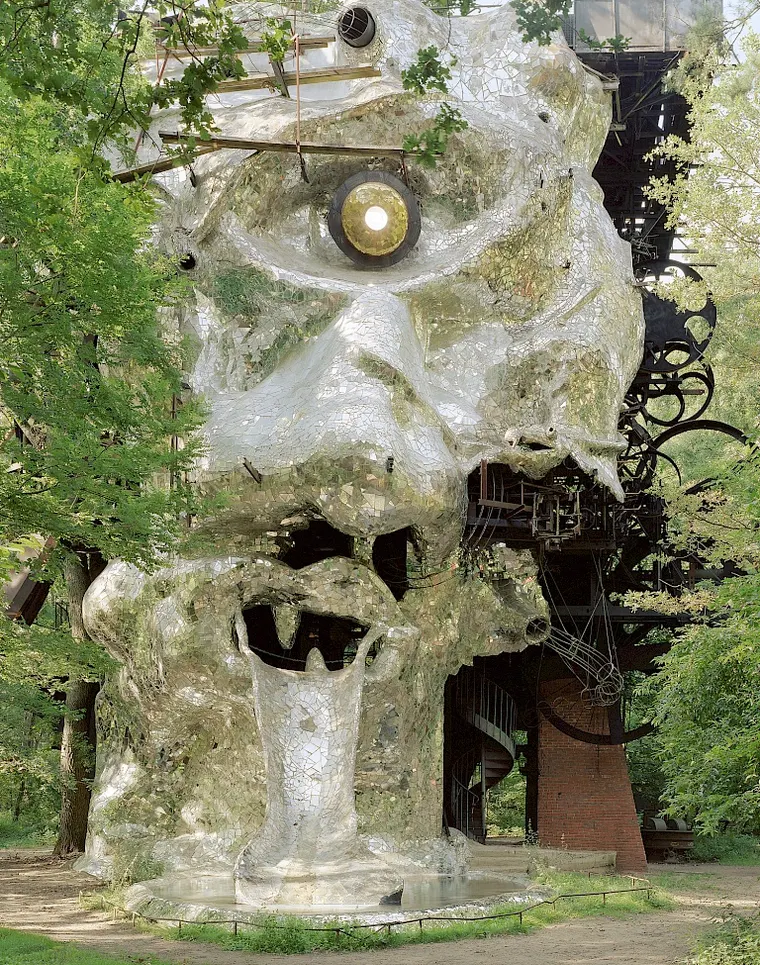

Locatie van de dag

Milly-la-Forêt · Frankrijk
Jean Tinguely en Niki de Saint Phalle met ruim twintig anderen, 1969–1994
Een 22,5 meter hoge stalen kop van 350 ton, verstopt in het bos; binnenin een bewegend theater van Tinguely-machinerie en Niki's spiegelmozaïek. Dit is het referentiepunt.
Kunstparken en land art in Midden- en Zuid-Europa
Kunstparken, land art, kunstenaarstuinen en Gesamtkunstwerken in Midden- en Zuid-Europa. Het vertrekpunt was Le Cyclop in het bos van Milly-la-Forêt, de stalen kop van Tinguely en Niki de Saint Phalle, en de Giardino dei Tarocchi in Capalbio. Van daaruit loopt een lijn naar alles wat hieronder staat, sinds september 2026 ook naar de adressen waar je kunt blijven slapen en de gebouwen die zelf de reis waard zijn.
Gewone stadsmusea staan er niet in, tenzij het gebouw of het landschap zelf de reden is om te gaan. Openingstijden zijn die van 2026; bij de kleine, familiegerunde adressen is bellen verstandiger dan hopen.
01 · De kaart
Mercator · 5°-netLegenda
de kern van de lijst
overige locatie
Fig. 1 · alle 303 locaties stippen op plaatsniveau, voor de blik, niet voor de navigatie Scrollen om te zoomen, slepen om te schuiven, klikken voor de beschrijving